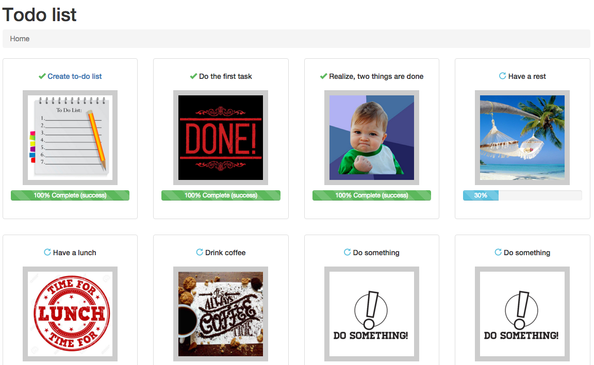
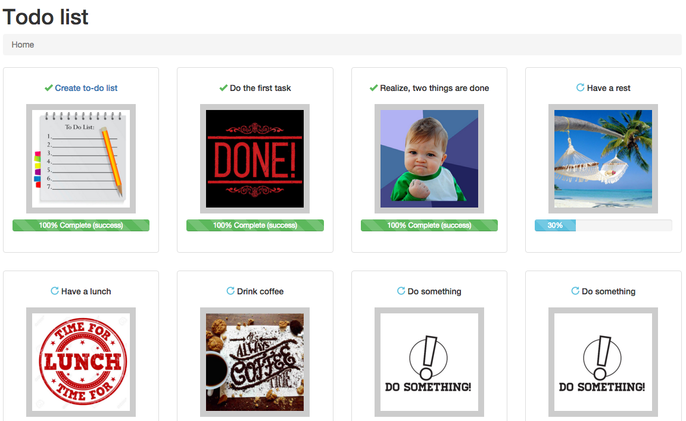

About
On this site you can create your own to-do list. Every task has it's own status and you can change it when you are done with this task, or you wish to cancel it.
Here you can see example of to-do list, that was created on our site.
On this site you can create your own to-do list. Every task has it's own status and you can change it when you are done with this task, or you wish to cancel it.
Here you can see example of to-do list, that was created on our site.
